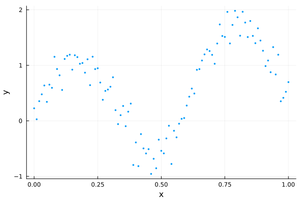

Initializing HMC with Pathfinder
The MCMC warm-up phase
When using MCMC to draw samples from some target distribution, there is often a lengthy warm-up phase with 2 phases:
- converge to the typical set (the region of the target distribution where the bulk of the probability mass is located)
- adapt any tunable parameters of the MCMC sampler (optional)
While (1) often happens fairly quickly, (2) usually requires a lengthy exploration of the typical set to iteratively adapt parameters suitable for further exploration. An example is the widely used windowed adaptation scheme of Hamiltonian Monte Carlo (HMC) in Stan [3], where a step size and positive definite metric (aka mass matrix) are adapted. For posteriors with complex geometry, the adaptation phase can require many evaluations of the gradient of the log density function of the target distribution.
Pathfinder can be used to initialize MCMC, and in particular HMC, in 3 ways:
- Initialize MCMC from one of Pathfinder's draws (replace phase 1 of the warm-up).
- Initialize an HMC metric adaptation from the inverse of the covariance of the multivariate normal approximation (replace the first window of phase 2 of the warm-up).
- Use the inverse of the covariance as the metric without further adaptation (replace phase 2 of the warm-up).
This tutorial demonstrates all three approaches with DynamicHMC.jl and AdvancedHMC.jl. Both of these packages have standalone implementations of adaptive HMC (aka NUTS) and can be used independently of any probabilistic programming language (PPL). Both the Turing and Soss PPLs have some DynamicHMC integration, while Turing also integrates with AdvancedHMC.
For demonstration purposes, we'll use the following dummy data:
using LinearAlgebra, Pathfinder, Random, StatsFuns, StatsPlots
Random.seed!(91)
x = 0:0.01:1
y = @. sin(10x) + randn() * 0.2 + x
scatter(x, y; xlabel="x", ylabel="y", legend=false, msw=0, ms=2)
We'll fit this using a simple polynomial regression model:
\[\begin{aligned} \sigma &\sim \text{Half-Normal}(\mu=0, \sigma=1)\\ \alpha, \beta_j &\sim \mathrm{Normal}(\mu=0, \sigma=1)\\ \hat{y}_i &= \alpha + \sum_{j=1}^J x_i^j \beta_j\\ y_i &\sim \mathrm{Normal}(\mu=\hat{y}_i, \sigma=\sigma) \end{aligned}\]
We just need to implement the log-density function of the resulting posterior.
struct RegressionProblem{X,Z,Y}
x::X
J::Int
z::Z
y::Y
end
function RegressionProblem(x, J, y)
z = x .* (1:J)'
return RegressionProblem(x, J, z, y)
end
function (prob::RegressionProblem)(θ)
(; σ, α, β) = θ
(; z, y) = prob
lp = normlogpdf(σ) + logtwo
lp += normlogpdf(α)
lp += sum(normlogpdf, β)
y_hat = muladd(z, β, α)
lp += sum(eachindex(y_hat, y)) do i
return normlogpdf(y_hat[i], σ, y[i])
end
return lp
end
J = 3
dim = J + 2
model = RegressionProblem(x, J, y)
ndraws = 1_000;DynamicHMC.jl
To use DynamicHMC, we first need to transform our model to an unconstrained space using TransformVariables.jl and wrap it in a type that implements the LogDensityProblems interface (see DynamicHMC's worked example):
using DynamicHMC, ForwardDiff, LogDensityProblems, LogDensityProblemsAD, TransformVariables
using TransformedLogDensities: TransformedLogDensity
transform = as((σ=asℝ₊, α=asℝ, β=as(Array, J)))
P = TransformedLogDensity(transform, model)
∇P = ADgradient(:ForwardDiff, P)ForwardDiff AD wrapper for TransformedLogDensity of dimension 5, w/ chunk size 5Pathfinder can take any object that implements this interface.
result_pf = pathfinder(∇P)Single-path Pathfinder result
tries: 1
draws: 5
fit iteration: 15 (total: 23)
fit ELBO: -117.64 ± 0.23
fit distribution: MvNormal{Float64, Pathfinder.WoodburyPDMat{Float64, LinearAlgebra.Diagonal{Float64, Vector{Float64}}, Matrix{Float64}, Matrix{Float64}, Pathfinder.WoodburyPDFactorization{Float64, LinearAlgebra.Diagonal{Float64, Vector{Float64}}, LinearAlgebra.QRCompactWYQ{Float64, Matrix{Float64}, Matrix{Float64}}, LinearAlgebra.UpperTriangular{Float64, Matrix{Float64}}}}, Vector{Float64}}(
dim: 5
μ: [-0.35193742737501355, 0.24690060220202914, 0.05827588239230507, 0.1165517598296827, 0.1748276485360773]
Σ: [0.004969260325419835 -0.00022439878810641406 … 0.0005188996329265915 -0.00023506395820184131; -0.00022439878810642013 0.02586718625550903 … -0.0177998683150072 -0.00019797809456924796; … ; 0.0005188996329265512 -0.017799868315007177 … 0.7439352913289171 -0.43849537809019495; -0.0002350639582018271 -0.00019797809456919592 … -0.43849537809019495 0.2653368500944556]
)
init_params = result_pf.draws[:, 1]5-element Vector{Float64}:
-0.24466990408861164
0.2908259603073542
0.5016560101883027
-1.6244919269371485
1.1758786640700607inv_metric = result_pf.fit_distribution.Σ5×5 Pathfinder.WoodburyPDMat{Float64, LinearAlgebra.Diagonal{Float64, Vector{Float64}}, Matrix{Float64}, Matrix{Float64}, Pathfinder.WoodburyPDFactorization{Float64, LinearAlgebra.Diagonal{Float64, Vector{Float64}}, LinearAlgebra.QRCompactWYQ{Float64, Matrix{Float64}, Matrix{Float64}}, LinearAlgebra.UpperTriangular{Float64, Matrix{Float64}}}}:
0.00496926 -0.000224399 -4.08535e-5 0.0005189 -0.000235064
-0.000224399 0.0258672 -0.00139475 -0.0177999 -0.000197978
-4.08535e-5 -0.00139475 0.038944 -0.145762 0.0852677
0.0005189 -0.0177999 -0.145762 0.743935 -0.438495
-0.000235064 -0.000197978 0.0852677 -0.438495 0.265337Initializing from Pathfinder's draws
Here we just need to pass one of the draws as the initial point q:
result_dhmc1 = mcmc_with_warmup(
Random.default_rng(),
∇P,
ndraws;
initialization=(; q=init_params),
reporter=NoProgressReport(),
)(posterior_matrix = [-0.38145812242255556 -0.34863366426539966 … -0.3805982546431439 -0.25030877003175367; 0.28254455998871725 0.25194684168357484 … 0.38907583149285063 0.3890494131401083; … ; -0.8487761108393872 1.2427039939964417 … -0.20427136402393875 -1.2636774192998828; 0.26759835996444437 -0.26474646518417566 … 0.3567435124989401 1.036623563904282], tree_statistics = DynamicHMC.TreeStatisticsNUTS[DynamicHMC.TreeStatisticsNUTS(-117.3685303393445, 5, turning at positions -25:6, 0.934296152256942, 31, DynamicHMC.Directions(0x416e3166)), DynamicHMC.TreeStatisticsNUTS(-117.26555194359928, 6, turning at positions -2:61, 0.9921206710171386, 63, DynamicHMC.Directions(0x5170ab7d)), DynamicHMC.TreeStatisticsNUTS(-117.04200198643885, 6, turning at positions 0:63, 0.8444827801702954, 63, DynamicHMC.Directions(0xc5394abf)), DynamicHMC.TreeStatisticsNUTS(-116.86633063792787, 6, turning at positions -14:49, 0.9967997447492489, 63, DynamicHMC.Directions(0x6e1f7971)), DynamicHMC.TreeStatisticsNUTS(-115.32221545440021, 5, turning at positions -23:8, 0.9800479737646045, 31, DynamicHMC.Directions(0xb29a3f48)), DynamicHMC.TreeStatisticsNUTS(-116.65298105999791, 6, turning at positions -25:38, 0.9961787407153058, 63, DynamicHMC.Directions(0x5ba6bf66)), DynamicHMC.TreeStatisticsNUTS(-115.49185496020884, 6, turning at positions -28:35, 0.9948648131832661, 63, DynamicHMC.Directions(0x9fe1e9a3)), DynamicHMC.TreeStatisticsNUTS(-117.00308342534012, 6, turning at positions 64:127, 0.9021712921370688, 127, DynamicHMC.Directions(0xae2807ff)), DynamicHMC.TreeStatisticsNUTS(-119.34615575383391, 6, turning at positions -40:23, 0.9429729306634334, 63, DynamicHMC.Directions(0x746eb0d7)), DynamicHMC.TreeStatisticsNUTS(-117.252731016899, 5, turning at positions -28:3, 0.970933108539607, 31, DynamicHMC.Directions(0x77b63de3)) … DynamicHMC.TreeStatisticsNUTS(-116.02429173337701, 5, turning at positions -23:8, 0.9928481752880766, 31, DynamicHMC.Directions(0xa155b5e8)), DynamicHMC.TreeStatisticsNUTS(-115.59171120991378, 5, turning at positions -4:27, 0.9760826036367347, 31, DynamicHMC.Directions(0xbf4f5d5b)), DynamicHMC.TreeStatisticsNUTS(-118.66312836322545, 6, turning at positions -37:26, 0.6723325958446016, 63, DynamicHMC.Directions(0x8645785a)), DynamicHMC.TreeStatisticsNUTS(-116.81471954735406, 6, turning at positions -24:39, 0.9992007464041757, 63, DynamicHMC.Directions(0xcddc02e7)), DynamicHMC.TreeStatisticsNUTS(-121.51162177419482, 6, turning at positions -18:45, 0.8920305344791164, 63, DynamicHMC.Directions(0x6fa2932d)), DynamicHMC.TreeStatisticsNUTS(-118.73866404752661, 6, turning at positions -55:8, 0.9986952512077627, 63, DynamicHMC.Directions(0x1b4d56c8)), DynamicHMC.TreeStatisticsNUTS(-116.19103501497823, 6, turning at positions -45:18, 0.9994387044470909, 63, DynamicHMC.Directions(0x3e1a0c52)), DynamicHMC.TreeStatisticsNUTS(-115.45108090924369, 6, turning at positions -39:24, 0.9282531307305905, 63, DynamicHMC.Directions(0x32592ed8)), DynamicHMC.TreeStatisticsNUTS(-116.34233199921924, 6, turning at positions -63:0, 0.9121065663627262, 63, DynamicHMC.Directions(0x925d1b40)), DynamicHMC.TreeStatisticsNUTS(-117.0154363902258, 6, turning at positions -14:49, 0.9448540574033879, 63, DynamicHMC.Directions(0x493b6ef1))], logdensities = [-116.38144630213492, -113.47664089828677, -115.75473553659546, -115.02105430205488, -114.77557237531005, -114.96193615513218, -114.78576569770168, -113.39572895948949, -116.25600620498422, -115.79998749642999 … -115.14941264706653, -114.26505375950599, -115.90771021770426, -114.1266793606061, -117.6629161019562, -114.16328192457142, -113.79051561662725, -113.55123249171763, -113.403591290589, -115.45518124002186], κ = Gaussian kinetic energy (Diagonal), √diag(M⁻¹): [0.07285070742696034, 0.1343600015031832, 0.9604339306863752, 0.782423793520395, 0.5449383158493016], ϵ = 0.052646180856712715)Initializing metric adaptation from Pathfinder's estimate
To start with Pathfinder's inverse metric estimate, we just need to initialize a DynamicHMC.GaussianKineticEnergy object with it as input:
result_dhmc2 = mcmc_with_warmup(
Random.default_rng(),
∇P,
ndraws;
initialization=(; q=init_params, κ=GaussianKineticEnergy(inv_metric)),
warmup_stages=default_warmup_stages(; M=Symmetric),
reporter=NoProgressReport(),
)(posterior_matrix = [-0.35221306805454894 -0.34687080054077835 … -0.312306617221189 -0.3200782390422909; 0.33774571030896017 0.1882942203116809 … -0.036442503676706955 0.1897244270459752; … ; 1.2943422154205324 -0.5033307368840209 … -0.0589919920288442 -0.5185243587493061; -0.33612952314947275 0.2388677810791043 … -0.13709064922141828 0.9089562382629092], tree_statistics = DynamicHMC.TreeStatisticsNUTS[DynamicHMC.TreeStatisticsNUTS(-116.10320606887191, 3, turning at positions -6:1, 0.9796639841382084, 7, DynamicHMC.Directions(0x5fadfca1)), DynamicHMC.TreeStatisticsNUTS(-117.0419785402296, 3, turning at positions -7:0, 0.65264324555936, 7, DynamicHMC.Directions(0xc398ce40)), DynamicHMC.TreeStatisticsNUTS(-118.21874723311667, 3, turning at positions -6:1, 0.6780404508389933, 7, DynamicHMC.Directions(0xeeff0ea1)), DynamicHMC.TreeStatisticsNUTS(-119.12560871117326, 3, turning at positions -7:0, 0.7768037670584896, 7, DynamicHMC.Directions(0x67ecd720)), DynamicHMC.TreeStatisticsNUTS(-117.63063228246416, 3, turning at positions -5:2, 0.7898070601214825, 7, DynamicHMC.Directions(0x2070ec72)), DynamicHMC.TreeStatisticsNUTS(-114.8355967313229, 3, turning at positions -1:6, 0.9149923271850279, 7, DynamicHMC.Directions(0xe099d246)), DynamicHMC.TreeStatisticsNUTS(-115.31502589720222, 3, turning at positions -6:1, 0.5456149819998808, 7, DynamicHMC.Directions(0xd5ea3d59)), DynamicHMC.TreeStatisticsNUTS(-114.85116383004421, 3, turning at positions -6:1, 0.9999999999999999, 7, DynamicHMC.Directions(0xd00142a1)), DynamicHMC.TreeStatisticsNUTS(-114.04725969034494, 3, turning at positions -6:1, 0.988772378930783, 7, DynamicHMC.Directions(0x470de329)), DynamicHMC.TreeStatisticsNUTS(-113.67649105384348, 3, turning at positions -7:0, 0.9408723512424676, 7, DynamicHMC.Directions(0xa52f2cd0)) … DynamicHMC.TreeStatisticsNUTS(-119.40740804166792, 3, turning at positions -3:4, 0.8613131779795891, 7, DynamicHMC.Directions(0xc25dd254)), DynamicHMC.TreeStatisticsNUTS(-119.73767609863614, 3, turning at positions -4:3, 0.9621428385991007, 7, DynamicHMC.Directions(0xac8ed76b)), DynamicHMC.TreeStatisticsNUTS(-121.18451828167944, 3, turning at positions 0:7, 0.5707736603669359, 7, DynamicHMC.Directions(0x14ce36b7)), DynamicHMC.TreeStatisticsNUTS(-118.21869179977706, 2, turning at positions -2:1, 0.9999999999999999, 3, DynamicHMC.Directions(0x62c62b2d)), DynamicHMC.TreeStatisticsNUTS(-115.3653397277436, 3, turning at positions -6:1, 0.9999999999999999, 7, DynamicHMC.Directions(0x0394d179)), DynamicHMC.TreeStatisticsNUTS(-116.36963627210817, 2, turning at positions -3:-6, 0.407987489731607, 7, DynamicHMC.Directions(0xb56292f1)), DynamicHMC.TreeStatisticsNUTS(-115.64289783522896, 3, turning at positions -4:3, 0.8826199885616856, 7, DynamicHMC.Directions(0xdba673fb)), DynamicHMC.TreeStatisticsNUTS(-119.94584807288716, 3, turning at positions 0:7, 0.9668605216235041, 7, DynamicHMC.Directions(0xf0bb531f)), DynamicHMC.TreeStatisticsNUTS(-120.11159177378161, 3, turning at positions -4:3, 0.8238546805457012, 7, DynamicHMC.Directions(0x96834f4b)), DynamicHMC.TreeStatisticsNUTS(-116.9322394717169, 3, turning at positions -1:6, 0.88856816769786, 7, DynamicHMC.Directions(0xe7af043e))], logdensities = [-114.55948901037773, -113.5528636388927, -115.28640885420306, -116.1283194549906, -113.00342504121207, -112.81404925892585, -114.27614646126126, -112.8170261797812, -112.80607335569717, -113.35803882573276 … -117.82426077037708, -115.37323425892187, -118.8470865489675, -115.10012389386348, -112.67811602736367, -112.81942038679794, -114.4290661735272, -115.66023494073164, -115.72480862570183, -113.36274911796376], κ = Gaussian kinetic energy (Symmetric), √diag(M⁻¹): [0.0671333332125545, 0.14438286374610795, 0.9803162995703211, 0.8499023902969869, 0.6227074324008163], ϵ = 0.46898831303857325)We also specified that DynamicHMC should tune a dense Symmetric matrix. However, we could also have requested a Diagonal metric.
Use Pathfinder's metric estimate for sampling
To turn off metric adaptation entirely and use Pathfinder's estimate, we just set the number and size of the metric adaptation windows to 0.
result_dhmc3 = mcmc_with_warmup(
Random.default_rng(),
∇P,
ndraws;
initialization=(; q=init_params, κ=GaussianKineticEnergy(inv_metric)),
warmup_stages=default_warmup_stages(; middle_steps=0, doubling_stages=0),
reporter=NoProgressReport(),
)(posterior_matrix = [-0.32143396581649464 -0.3822941500852686 … -0.3713111801794873 -0.3799938259740744; 0.25911879883101735 0.205025349375665 … 0.06681459375687446 0.3970525003701711; … ; -0.21321351446319028 0.6716053452242343 … 0.2623835750841893 -0.9155374072163014; 0.6824276140135508 0.17766351897790736 … 0.09392157246702434 0.5252714053292364], tree_statistics = DynamicHMC.TreeStatisticsNUTS[DynamicHMC.TreeStatisticsNUTS(-115.14759898056255, 3, turning at positions -4:3, 0.969755726749173, 7, DynamicHMC.Directions(0x5e34eadb)), DynamicHMC.TreeStatisticsNUTS(-114.15867146124002, 3, turning at positions -1:6, 0.9198788453313942, 7, DynamicHMC.Directions(0x9e55ff5e)), DynamicHMC.TreeStatisticsNUTS(-115.55911680723912, 4, turning at positions -19:-26, 0.9037207897145587, 31, DynamicHMC.Directions(0xd8ec0ac5)), DynamicHMC.TreeStatisticsNUTS(-115.76640388817033, 3, turning at positions -7:0, 0.814179243975721, 7, DynamicHMC.Directions(0xca409680)), DynamicHMC.TreeStatisticsNUTS(-115.50092875415442, 3, turning at positions -3:4, 0.9767156101141464, 7, DynamicHMC.Directions(0x1389e9f4)), DynamicHMC.TreeStatisticsNUTS(-117.21233579964485, 3, turning at positions -8:-15, 0.9289068421676859, 15, DynamicHMC.Directions(0x66e49570)), DynamicHMC.TreeStatisticsNUTS(-120.39144444175945, 3, turning at positions -2:5, 0.7163670132214722, 7, DynamicHMC.Directions(0x71139df5)), DynamicHMC.TreeStatisticsNUTS(-115.89696780925064, 3, turning at positions -4:-11, 0.9208343732567918, 15, DynamicHMC.Directions(0x36ca1974)), DynamicHMC.TreeStatisticsNUTS(-116.58355058178772, 3, turning at positions -5:2, 0.8550298869077686, 7, DynamicHMC.Directions(0xe818af0a)), DynamicHMC.TreeStatisticsNUTS(-115.67391052238325, 3, turning at positions -3:4, 0.9667172652053972, 7, DynamicHMC.Directions(0x54866eb4)) … DynamicHMC.TreeStatisticsNUTS(-115.90822783110417, 2, turning at positions -1:2, 0.9516764129256189, 3, DynamicHMC.Directions(0x7e2fea42)), DynamicHMC.TreeStatisticsNUTS(-114.21702238754665, 3, turning at positions 12:15, 0.9983076294095832, 15, DynamicHMC.Directions(0xddb8d20f)), DynamicHMC.TreeStatisticsNUTS(-117.62742305733879, 3, turning at positions 5:12, 0.7492500250295159, 15, DynamicHMC.Directions(0xe7cef1bc)), DynamicHMC.TreeStatisticsNUTS(-116.19935247060464, 3, turning at positions -5:2, 0.9939280903176039, 7, DynamicHMC.Directions(0x1d0017b2)), DynamicHMC.TreeStatisticsNUTS(-116.37797660219779, 2, turning at positions -3:0, 0.8689628905215433, 3, DynamicHMC.Directions(0x0485db80)), DynamicHMC.TreeStatisticsNUTS(-117.44650618393877, 2, turning at positions 0:3, 0.7628293236890786, 3, DynamicHMC.Directions(0xb52a5a4b)), DynamicHMC.TreeStatisticsNUTS(-117.70997066222114, 3, turning at positions -4:3, 0.97766391646877, 7, DynamicHMC.Directions(0x71cfb5db)), DynamicHMC.TreeStatisticsNUTS(-116.16963651375572, 4, turning at positions 13:16, 0.9978968207765394, 19, DynamicHMC.Directions(0x7012f39c)), DynamicHMC.TreeStatisticsNUTS(-114.67682691751872, 2, turning at positions -1:2, 0.897801624548026, 3, DynamicHMC.Directions(0x55b9dada)), DynamicHMC.TreeStatisticsNUTS(-116.39132871545759, 3, turning at positions -4:3, 0.955432536872401, 7, DynamicHMC.Directions(0x8c8a2913))], logdensities = [-112.99433630566396, -113.23849254912966, -113.16462999450437, -114.38689361371819, -114.26695300702683, -115.47511323731551, -113.90606511685509, -114.13451414035835, -114.12264683334018, -113.77050278489939 … -113.86805374858633, -113.08227885149905, -114.41929194240815, -114.38855255412119, -113.54403346371141, -116.05093053701714, -114.78703476079605, -113.01369628849393, -114.04874354421507, -114.6325173320075], κ = Gaussian kinetic energy (WoodburyPDMat), √diag(M⁻¹): [0.07049298068190786, 0.16083278973986936, 0.19734223780493018, 0.862516835388688, 0.5151085808782995], ϵ = 0.7821729260925425)AdvancedHMC.jl
Similar to Pathfinder and DynamicHMC, AdvancedHMC can also work with a LogDensityProblem:
using AdvancedHMC
nadapts = 500;Initializing from Pathfinder's draws
metric = DiagEuclideanMetric(dim)
hamiltonian = Hamiltonian(metric, ∇P)
ϵ = find_good_stepsize(hamiltonian, init_params)
integrator = Leapfrog(ϵ)
kernel = HMCKernel(Trajectory{MultinomialTS}(integrator, GeneralisedNoUTurn()))
adaptor = StepSizeAdaptor(0.8, integrator)
samples_ahmc1, stats_ahmc1 = sample(
hamiltonian,
kernel,
init_params,
ndraws + nadapts,
adaptor,
nadapts;
drop_warmup=true,
progress=false,
)([[-0.3409352414419376, 0.17575505530067295, -0.21615836270927807, 0.05682725543630196, 0.31438702471294755], [-0.3890034125200576, 0.31621561041079665, 0.33823670186521654, -1.6732095705683288, 1.2311763649760368], [-0.2836367099591833, 0.4720689169249854, 0.26226751320960395, -1.565873509627715, 1.0727460162996898], [-0.32298945275580926, -0.026064352816758625, 0.4291771744901204, -0.9337523464055376, 0.8840349350565028], [-0.3543482791424471, 0.19551187376069118, 0.30295368847552107, -0.9797582044525102, 0.7991723318677658], [-0.3271147798196081, 0.49221913877441364, -0.38418235450518634, -0.6647463578890849, 0.697571542881392], [-0.32742347487896056, 0.5639534965695886, -1.1038760557400993, 0.10592782524819885, 0.4052038738913616], [-0.3406692305703267, 0.3562295400118162, -1.0728673740455097, 0.0782854079993312, 0.5180720085200492], [-0.3184510458756292, 0.052395862598461226, -0.9810241448675707, 0.16814758962922918, 0.5893081933470019], [-0.335514877174353, 0.054555739345662935, 0.18812487625584376, 0.0053197408358374625, 0.3105046418649226] … [-0.35722529295757227, 0.2934727669234955, -0.7643226460303064, 0.8178147272206155, 0.008545674083132844], [-0.3140174519618264, 0.2186340949511529, -1.126053550985568, 0.8518694766423359, 0.055218290086881984], [-0.27662642307949337, 0.3431966461330048, -0.14246523527392346, -0.3157468265697492, 0.48384825895925127], [-0.40077340723801463, 0.3107693482069367, 0.9700375905498697, 0.06276210402749988, -0.11096520806882262], [-0.2907547738989579, 0.32377693251590484, 0.14495914745176375, 0.909020079051265, -0.40599997504798035], [-0.34081032933643457, 0.16749678941458127, -1.0620498266275629, -0.4312929113362862, 0.9589191837664063], [-0.3994814365513765, 0.10992108393413709, -0.9533683527318391, 0.4420928273937881, 0.39335381052483154], [-0.30463396493781697, 0.15229449593927613, -0.9061370051882213, 0.433297810201663, 0.37119132452323944], [-0.2979220616869866, 0.32697437386950967, -1.3826466220159026, 0.21949583785022378, 0.5758884902337833], [-0.2190206644980047, 0.36584741391722814, -1.361870901516436, 0.24568387230704797, 0.5416758115941137]], NamedTuple[(n_steps = 63, is_accept = true, acceptance_rate = 0.9796951557904169, log_density = -112.48290250405225, hamiltonian_energy = 116.63130482823112, hamiltonian_energy_error = 0.02478442404493819, max_hamiltonian_energy_error = 0.09272876510839012, tree_depth = 5, numerical_error = false, step_size = 0.03968454095061538, nom_step_size = 0.03968454095061538, is_adapt = false), (n_steps = 63, is_accept = true, acceptance_rate = 0.982246964386988, log_density = -114.57313940689549, hamiltonian_energy = 114.85621862867089, hamiltonian_energy_error = -0.0973079347896828, max_hamiltonian_energy_error = -0.1066995113562541, tree_depth = 6, numerical_error = false, step_size = 0.03968454095061538, nom_step_size = 0.03968454095061538, is_adapt = false), (n_steps = 15, is_accept = true, acceptance_rate = 0.8277890768935646, log_density = -116.04612701928242, hamiltonian_energy = 116.82451733692947, hamiltonian_energy_error = 0.22841077527810683, max_hamiltonian_energy_error = 0.3429629036419044, tree_depth = 3, numerical_error = false, step_size = 0.03968454095061538, nom_step_size = 0.03968454095061538, is_adapt = false), (n_steps = 39, is_accept = true, acceptance_rate = 0.9819711343986675, log_density = -114.88354454089904, hamiltonian_energy = 117.6824800823787, hamiltonian_energy_error = -0.16393070862359593, max_hamiltonian_energy_error = -0.2317495419915474, tree_depth = 5, numerical_error = false, step_size = 0.03968454095061538, nom_step_size = 0.03968454095061538, is_adapt = false), (n_steps = 7, is_accept = true, acceptance_rate = 0.6205102205964854, log_density = -113.75590392355583, hamiltonian_energy = 117.08122269186505, hamiltonian_energy_error = 0.23729522294307515, max_hamiltonian_energy_error = 0.9626292312535014, tree_depth = 3, numerical_error = false, step_size = 0.03968454095061538, nom_step_size = 0.03968454095061538, is_adapt = false), (n_steps = 47, is_accept = true, acceptance_rate = 0.7908041394146795, log_density = -114.34819467059437, hamiltonian_energy = 117.10151663285956, hamiltonian_energy_error = -0.22823297648666596, max_hamiltonian_energy_error = 0.7647024061799215, tree_depth = 5, numerical_error = false, step_size = 0.03968454095061538, nom_step_size = 0.03968454095061538, is_adapt = false), (n_steps = 79, is_accept = true, acceptance_rate = 0.936563979416938, log_density = -115.37486142577524, hamiltonian_energy = 117.37780652022438, hamiltonian_energy_error = -0.05130202185091548, max_hamiltonian_energy_error = 0.20480519314766354, tree_depth = 6, numerical_error = false, step_size = 0.03968454095061538, nom_step_size = 0.03968454095061538, is_adapt = false), (n_steps = 7, is_accept = true, acceptance_rate = 0.9998007635305045, log_density = -113.09797714915155, hamiltonian_energy = 115.466147767482, hamiltonian_energy_error = -0.03825683241194611, max_hamiltonian_energy_error = -0.03825683241194611, tree_depth = 3, numerical_error = false, step_size = 0.03968454095061538, nom_step_size = 0.03968454095061538, is_adapt = false), (n_steps = 15, is_accept = true, acceptance_rate = 0.9705401193875666, log_density = -113.75032545952159, hamiltonian_energy = 115.45142896836326, hamiltonian_energy_error = 0.0179375370336885, max_hamiltonian_energy_error = 0.0590036410145558, tree_depth = 3, numerical_error = false, step_size = 0.03968454095061538, nom_step_size = 0.03968454095061538, is_adapt = false), (n_steps = 63, is_accept = true, acceptance_rate = 0.9525429107880629, log_density = -113.08992544136889, hamiltonian_energy = 115.25769913233003, hamiltonian_energy_error = 0.0001284809528954156, max_hamiltonian_energy_error = 0.0952636036194292, tree_depth = 5, numerical_error = false, step_size = 0.03968454095061538, nom_step_size = 0.03968454095061538, is_adapt = false) … (n_steps = 63, is_accept = true, acceptance_rate = 0.8573169885519782, log_density = -113.51191410674271, hamiltonian_energy = 114.49629738569578, hamiltonian_energy_error = 0.3046237889747232, max_hamiltonian_energy_error = 0.37308126380702333, tree_depth = 5, numerical_error = false, step_size = 0.03968454095061538, nom_step_size = 0.03968454095061538, is_adapt = false), (n_steps = 31, is_accept = true, acceptance_rate = 0.9888965864261461, log_density = -113.62589908955704, hamiltonian_energy = 114.67023790263107, hamiltonian_energy_error = -0.1707579018266614, max_hamiltonian_energy_error = -0.34218773454892926, tree_depth = 4, numerical_error = false, step_size = 0.03968454095061538, nom_step_size = 0.03968454095061538, is_adapt = false), (n_steps = 63, is_accept = true, acceptance_rate = 0.8322016149321056, log_density = -112.99052973665827, hamiltonian_energy = 116.47213763609513, hamiltonian_energy_error = -0.10462823272176536, max_hamiltonian_energy_error = 0.5126125899517291, tree_depth = 6, numerical_error = false, step_size = 0.03968454095061538, nom_step_size = 0.03968454095061538, is_adapt = false), (n_steps = 63, is_accept = true, acceptance_rate = 0.8116446792698669, log_density = -112.96044486727034, hamiltonian_energy = 114.3239387693309, hamiltonian_energy_error = -0.1620960039507935, max_hamiltonian_energy_error = 0.554721843763943, tree_depth = 6, numerical_error = false, step_size = 0.03968454095061538, nom_step_size = 0.03968454095061538, is_adapt = false), (n_steps = 127, is_accept = true, acceptance_rate = 0.9970972621845601, log_density = -113.11756094261808, hamiltonian_energy = 113.84534930456843, hamiltonian_energy_error = 0.005909171408518432, max_hamiltonian_energy_error = -0.05399828439038856, tree_depth = 6, numerical_error = false, step_size = 0.03968454095061538, nom_step_size = 0.03968454095061538, is_adapt = false), (n_steps = 127, is_accept = true, acceptance_rate = 0.9496110188226559, log_density = -113.340110083794, hamiltonian_energy = 116.49410382113388, hamiltonian_energy_error = -0.03412753424899506, max_hamiltonian_energy_error = 0.1473588937469401, tree_depth = 7, numerical_error = false, step_size = 0.03968454095061538, nom_step_size = 0.03968454095061538, is_adapt = false), (n_steps = 63, is_accept = true, acceptance_rate = 0.8141126274923894, log_density = -113.74778711589565, hamiltonian_energy = 115.63188082059601, hamiltonian_energy_error = 0.08879501894568875, max_hamiltonian_energy_error = 0.49094969965247515, tree_depth = 6, numerical_error = false, step_size = 0.03968454095061538, nom_step_size = 0.03968454095061538, is_adapt = false), (n_steps = 7, is_accept = true, acceptance_rate = 0.9885484716179641, log_density = -113.46338709383242, hamiltonian_energy = 114.0362216174686, hamiltonian_energy_error = 0.05179890656762609, max_hamiltonian_energy_error = -0.07010200534372757, tree_depth = 3, numerical_error = false, step_size = 0.03968454095061538, nom_step_size = 0.03968454095061538, is_adapt = false), (n_steps = 63, is_accept = true, acceptance_rate = 0.991342954945175, log_density = -113.86780828380445, hamiltonian_energy = 114.58202049227239, hamiltonian_energy_error = -0.04523710086544952, max_hamiltonian_energy_error = -0.18617948065893586, tree_depth = 6, numerical_error = false, step_size = 0.03968454095061538, nom_step_size = 0.03968454095061538, is_adapt = false), (n_steps = 15, is_accept = true, acceptance_rate = 0.919653973875724, log_density = -115.43912746924715, hamiltonian_energy = 117.816456664325, hamiltonian_energy_error = 0.13000449326459318, max_hamiltonian_energy_error = 0.26694196940573534, tree_depth = 3, numerical_error = false, step_size = 0.03968454095061538, nom_step_size = 0.03968454095061538, is_adapt = false)])Initializing metric adaptation from Pathfinder's estimate
We can't start with Pathfinder's inverse metric estimate directly. Instead we need to first extract its diagonal for a DiagonalEuclideanMetric or make it dense for a DenseEuclideanMetric:
metric = DenseEuclideanMetric(Matrix(inv_metric))
hamiltonian = Hamiltonian(metric, ∇P)
ϵ = find_good_stepsize(hamiltonian, init_params)
integrator = Leapfrog(ϵ)
kernel = HMCKernel(Trajectory{MultinomialTS}(integrator, GeneralisedNoUTurn()))
adaptor = StepSizeAdaptor(0.8, integrator)
samples_ahmc2, stats_ahmc2 = sample(
hamiltonian,
kernel,
init_params,
ndraws + nadapts,
adaptor,
nadapts;
drop_warmup=true,
progress=false,
)([[-0.2487520088235849, -0.04635558298358755, -3.2268000535606074, -0.700941088877745, 1.8912174858187905], [-0.3308818003784819, 0.22662420994796972, -3.1644378709463736, 0.0770695860098054, 1.3443696633135835], [-0.27870272957350267, -0.01089159845291568, 0.23837517198655073, 0.28867083066918897, 0.12169145510784024], [-0.37972116926765626, 0.21852195795478738, 0.03210039427854339, 1.2874162920554535, -0.5471276231181619], [-0.2830037487062437, 0.2782929430348689, 0.7808097930690607, -1.1140731083866076, 0.7211679009056869], [-0.23906954154563492, 0.1334141313039483, -0.20292643033066216, 0.3901664914766634, 0.13075183423604764], [-0.31624255214431374, 0.5894099861488123, -0.00018995805832421053, -0.6004550734461227, 0.5151051435298057], [-0.32367426887433615, -0.1360776393485993, -0.34885528034604474, 0.5902198540109082, 0.19990568512543994], [-0.3077789335735747, 0.34059380079621965, 0.8183577406604079, -0.2075435784912415, 0.10625389786403469], [-0.3886034118457825, 0.12121644795220121, 1.0053145569379534, 0.23182877150194248, -0.16810416407833073] … [-0.24468790498785667, 0.22493933723790743, -0.18700580158080846, 0.043848864968713694, 0.35501782945280436], [-0.2439669210320294, 0.39500131742595457, 0.5033941007153241, -0.7243222766691451, 0.5719546180539701], [-0.27965817518913944, 0.42078366735269046, 0.33842207397354407, 0.8474893020071839, -0.4761132493789389], [-0.3487042234927796, 0.1392875976248108, 0.8945320318931875, -0.8449159546391773, 0.5676467286606253], [-0.23492223928565628, 0.4447086099351278, 0.7158479845853238, -0.4332638158461164, 0.2034527084697123], [-0.25367258397529885, 0.12697586494862392, 0.10845558141759212, -0.668095171174463, 0.7175218895705445], [-0.36571909705372085, 0.43927632654695226, 0.030447676343745587, 0.5579509403158235, -0.20439113325331779], [-0.3142362645780938, 0.04965603824462396, 0.09438465529787218, -0.19760676650600928, 0.48239709274376313], [-0.32430451865541454, 0.1450415877703175, -0.6232736432548991, -0.36317504030107634, 0.8196423012417], [-0.265239662932868, 0.23600294016019033, 1.1520803142527396, -1.133554651555643, 0.6775100216676386]], NamedTuple[(n_steps = 11, is_accept = true, acceptance_rate = 0.6436150649926515, log_density = -123.33299262320051, hamiltonian_energy = 125.72768778952485, hamiltonian_energy_error = 0.769078443476019, max_hamiltonian_energy_error = 1.056048334428354, tree_depth = 3, numerical_error = false, step_size = 0.9513501810780365, nom_step_size = 0.9513501810780365, is_adapt = false), (n_steps = 7, is_accept = true, acceptance_rate = 1.0, log_density = -119.02562060771616, hamiltonian_energy = 123.90660906987634, hamiltonian_energy_error = -0.9022672659881295, max_hamiltonian_energy_error = -0.9022672659881295, tree_depth = 2, numerical_error = false, step_size = 0.9513501810780365, nom_step_size = 0.9513501810780365, is_adapt = false), (n_steps = 19, is_accept = true, acceptance_rate = 0.7564653711997125, log_density = -114.14432904558362, hamiltonian_energy = 122.80006885852373, hamiltonian_energy_error = 0.3548897928117043, max_hamiltonian_energy_error = 0.6771788731943644, tree_depth = 4, numerical_error = false, step_size = 0.9513501810780365, nom_step_size = 0.9513501810780365, is_adapt = false), (n_steps = 3, is_accept = true, acceptance_rate = 0.9167776254510658, log_density = -113.53418915600871, hamiltonian_energy = 116.19711492374074, hamiltonian_energy_error = -0.3515125019015244, max_hamiltonian_energy_error = -0.3515125019015244, tree_depth = 2, numerical_error = false, step_size = 0.9513501810780365, nom_step_size = 0.9513501810780365, is_adapt = false), (n_steps = 11, is_accept = true, acceptance_rate = 0.6329529438315259, log_density = -113.80196666702518, hamiltonian_energy = 118.76637406652155, hamiltonian_energy_error = 0.08389928793916113, max_hamiltonian_energy_error = 1.1895308651770762, tree_depth = 3, numerical_error = false, step_size = 0.9513501810780365, nom_step_size = 0.9513501810780365, is_adapt = false), (n_steps = 15, is_accept = true, acceptance_rate = 0.8642572124996791, log_density = -113.61333463382053, hamiltonian_energy = 116.50091594763256, hamiltonian_energy_error = -0.008305635696245872, max_hamiltonian_energy_error = 0.45833317732119383, tree_depth = 3, numerical_error = false, step_size = 0.9513501810780365, nom_step_size = 0.9513501810780365, is_adapt = false), (n_steps = 7, is_accept = true, acceptance_rate = 0.7773349895528037, log_density = -115.45369219581404, hamiltonian_energy = 116.52576723169935, hamiltonian_energy_error = 0.6202393599769636, max_hamiltonian_energy_error = 0.6202393599769636, tree_depth = 2, numerical_error = false, step_size = 0.9513501810780365, nom_step_size = 0.9513501810780365, is_adapt = false), (n_steps = 7, is_accept = true, acceptance_rate = 0.9319708166411778, log_density = -116.06676059748875, hamiltonian_energy = 118.93264652400678, hamiltonian_energy_error = 0.22588079007476836, max_hamiltonian_energy_error = -0.4606743076312938, tree_depth = 2, numerical_error = false, step_size = 0.9513501810780365, nom_step_size = 0.9513501810780365, is_adapt = false), (n_steps = 23, is_accept = true, acceptance_rate = 0.9956170926543225, log_density = -112.88488706508207, hamiltonian_energy = 116.96647412172965, hamiltonian_energy_error = -0.9667626823605389, max_hamiltonian_energy_error = -1.1563497629391009, tree_depth = 4, numerical_error = false, step_size = 0.9513501810780365, nom_step_size = 0.9513501810780365, is_adapt = false), (n_steps = 11, is_accept = true, acceptance_rate = 0.8199864305643042, log_density = -113.22780807845231, hamiltonian_energy = 115.0807184638478, hamiltonian_energy_error = 0.054893211950926, max_hamiltonian_energy_error = 0.4137510132947, tree_depth = 3, numerical_error = false, step_size = 0.9513501810780365, nom_step_size = 0.9513501810780365, is_adapt = false) … (n_steps = 3, is_accept = true, acceptance_rate = 0.5238398693019944, log_density = -113.59154787353272, hamiltonian_energy = 120.8009700649199, hamiltonian_energy_error = -0.11955228552750441, max_hamiltonian_energy_error = 1.314334024434615, tree_depth = 2, numerical_error = false, step_size = 0.9513501810780365, nom_step_size = 0.9513501810780365, is_adapt = false), (n_steps = 15, is_accept = true, acceptance_rate = 0.7893191285712977, log_density = -115.02576370901375, hamiltonian_energy = 116.85341586996066, hamiltonian_energy_error = 0.29687802045896206, max_hamiltonian_energy_error = 0.9146900450853366, tree_depth = 3, numerical_error = false, step_size = 0.9513501810780365, nom_step_size = 0.9513501810780365, is_adapt = false), (n_steps = 7, is_accept = true, acceptance_rate = 0.860955042560888, log_density = -113.85835618283377, hamiltonian_energy = 117.21767285969196, hamiltonian_energy_error = -0.26727301714440443, max_hamiltonian_energy_error = -0.645115609453299, tree_depth = 2, numerical_error = false, step_size = 0.9513501810780365, nom_step_size = 0.9513501810780365, is_adapt = false), (n_steps = 15, is_accept = true, acceptance_rate = 0.9940981209142119, log_density = -113.42430506121778, hamiltonian_energy = 114.66217141187516, hamiltonian_energy_error = -0.1514512127749299, max_hamiltonian_energy_error = -0.3493626079084038, tree_depth = 3, numerical_error = false, step_size = 0.9513501810780365, nom_step_size = 0.9513501810780365, is_adapt = false), (n_steps = 3, is_accept = true, acceptance_rate = 0.7538318100251913, log_density = -114.64729792324837, hamiltonian_energy = 115.93764187774678, hamiltonian_energy_error = 0.3375937077397424, max_hamiltonian_energy_error = 0.4733823621875928, tree_depth = 2, numerical_error = false, step_size = 0.9513501810780365, nom_step_size = 0.9513501810780365, is_adapt = false), (n_steps = 27, is_accept = true, acceptance_rate = 0.9851935426068331, log_density = -113.88766295478142, hamiltonian_energy = 116.17553957818905, hamiltonian_energy_error = -0.1292293852401798, max_hamiltonian_energy_error = -0.2770240097161718, tree_depth = 4, numerical_error = false, step_size = 0.9513501810780365, nom_step_size = 0.9513501810780365, is_adapt = false), (n_steps = 3, is_accept = true, acceptance_rate = 0.691127973107727, log_density = -113.26233669608527, hamiltonian_energy = 117.41699882225875, hamiltonian_energy_error = -0.45937033105641945, max_hamiltonian_energy_error = 0.8590883503658802, tree_depth = 2, numerical_error = false, step_size = 0.9513501810780365, nom_step_size = 0.9513501810780365, is_adapt = false), (n_steps = 11, is_accept = true, acceptance_rate = 0.9758439052614419, log_density = -113.3000912706601, hamiltonian_energy = 114.33575554416296, hamiltonian_energy_error = -0.0027078581412354197, max_hamiltonian_energy_error = -0.19283647468597565, tree_depth = 3, numerical_error = false, step_size = 0.9513501810780365, nom_step_size = 0.9513501810780365, is_adapt = false), (n_steps = 27, is_accept = true, acceptance_rate = 0.9041593540846357, log_density = -113.6066535409411, hamiltonian_energy = 115.86297521615039, hamiltonian_energy_error = -0.07616355425611232, max_hamiltonian_energy_error = 0.41359157652709655, tree_depth = 4, numerical_error = false, step_size = 0.9513501810780365, nom_step_size = 0.9513501810780365, is_adapt = false), (n_steps = 27, is_accept = true, acceptance_rate = 0.929213426710032, log_density = -114.50567341632356, hamiltonian_energy = 115.52137792451956, hamiltonian_energy_error = 0.18839386091435983, max_hamiltonian_energy_error = 0.24797267760580155, tree_depth = 4, numerical_error = false, step_size = 0.9513501810780365, nom_step_size = 0.9513501810780365, is_adapt = false)])Use Pathfinder's metric estimate for sampling
To use Pathfinder's metric with no metric adaptation, we need to use Pathfinder's own Pathfinder.RankUpdateEuclideanMetric type, which just wraps our inverse metric estimate for use with AdvancedHMC:
nadapts = 75
metric = Pathfinder.RankUpdateEuclideanMetric(inv_metric)
hamiltonian = Hamiltonian(metric, ∇P)
ϵ = find_good_stepsize(hamiltonian, init_params)
integrator = Leapfrog(ϵ)
kernel = HMCKernel(Trajectory{MultinomialTS}(integrator, GeneralisedNoUTurn()))
adaptor = StepSizeAdaptor(0.8, integrator)
samples_ahmc3, stats_ahmc3 = sample(
hamiltonian,
kernel,
init_params,
ndraws + nadapts,
adaptor,
nadapts;
drop_warmup=true,
progress=false,
)([[-0.4209691710782335, 0.3740841987511992, 1.222104865508553, -0.1756881285056805, -0.09345928770231163], [-0.30710024197801955, 0.09044630826763098, 1.2567682754439748, 0.33434796709774933, -0.26064125930025017], [-0.27640546002019073, 0.37256745638106126, -0.3546545766736072, -1.2008423829098098, 1.1369787280193595], [-0.43181485750089965, 0.22471258902884006, -0.557491296317416, 1.0793522521974335, -0.23569159724644753], [-0.25846590630932, 0.164115849554908, 1.346477830887096, -0.7077335027584747, 0.3251768023249585], [-0.24037805640948826, 0.2335479919080889, -1.9917623050579256, -0.9856528195559915, 1.5916287431636582], [-0.3620883616624555, 0.2900770885174441, -2.4919913441132433, 1.3184989682646782, 0.25143086531530057], [-0.434606505377627, 0.01856747827390992, 1.071610833023043, 0.24093200856596986, -0.1795106976015427], [-0.4193903262452079, 0.4979454882029901, 2.1694128633745913, -0.6580317399006106, -0.1653743278844141], [-0.40245641688295347, 0.10524351856727049, 1.7567100952758152, 0.8049369312058322, -0.7712300549797] … [-0.2973583737263171, 0.06258524895253242, 0.22016135071601564, 1.1522725528660922, -0.49055658890366866], [-0.25458296571614114, 0.2641660611662356, 0.1539803033308594, 1.285456070676201, -0.5980562997699694], [-0.41534166820832413, 0.33801437044056976, -0.6148035719367075, -1.3685269415908121, 1.3059295047862713], [-0.3716117710887362, 0.15553904697535775, -0.6422582660050462, -1.5137174870015417, 1.556193731008105], [-0.3913845288435654, 0.08056371329010595, 0.408193357705515, -2.2622928935396653, 1.7644533057739682], [-0.39844033639401844, 0.10161717078681723, 0.2789167875163842, -1.5381003868058802, 1.3087064925512284], [-0.2588973267079411, 0.44733048255565144, -0.6668307553933647, 1.5689095736861174, -0.6427361054488596], [-0.29793468161293235, 0.25778880509191504, 0.32054310309331197, 1.964129873189464, -1.118334859424417], [-0.19966523338574896, 0.177649355295924, 0.20429724979385078, 0.7044636078850324, -0.16748973838400105], [-0.2008363033084648, 0.2826984002258409, 1.5935262998349482, -0.6591725968755788, 0.18800511939707928]], NamedTuple[(n_steps = 31, is_accept = true, acceptance_rate = 0.9763432195856386, log_density = -113.86584045508388, hamiltonian_energy = 116.68957391940111, hamiltonian_energy_error = -0.033076235607936155, max_hamiltonian_energy_error = -0.12024943457676329, tree_depth = 5, numerical_error = false, step_size = 0.788819561573542, nom_step_size = 0.788819561573542, is_adapt = false), (n_steps = 11, is_accept = true, acceptance_rate = 0.9725983654270575, log_density = -113.97086444765027, hamiltonian_energy = 114.94922426353227, hamiltonian_energy_error = -0.019546557017065425, max_hamiltonian_energy_error = 0.10526784306128434, tree_depth = 3, numerical_error = false, step_size = 0.788819561573542, nom_step_size = 0.788819561573542, is_adapt = false), (n_steps = 31, is_accept = true, acceptance_rate = 0.9487293658697371, log_density = -114.41686381107544, hamiltonian_energy = 115.6890293882329, hamiltonian_energy_error = 0.15790747349082324, max_hamiltonian_energy_error = 0.18683876540742972, tree_depth = 5, numerical_error = false, step_size = 0.788819561573542, nom_step_size = 0.788819561573542, is_adapt = false), (n_steps = 31, is_accept = true, acceptance_rate = 0.9943307651989666, log_density = -113.58379151319085, hamiltonian_energy = 115.91413382021483, hamiltonian_energy_error = -0.2043648893296961, max_hamiltonian_energy_error = -0.23166952304866584, tree_depth = 5, numerical_error = false, step_size = 0.788819561573542, nom_step_size = 0.788819561573542, is_adapt = false), (n_steps = 31, is_accept = true, acceptance_rate = 0.993300850842853, log_density = -114.25940602019593, hamiltonian_energy = 115.81211194781083, hamiltonian_energy_error = 0.031182645255469765, max_hamiltonian_energy_error = -0.11998765226537955, tree_depth = 4, numerical_error = false, step_size = 0.788819561573542, nom_step_size = 0.788819561573542, is_adapt = false), (n_steps = 35, is_accept = true, acceptance_rate = 0.9459268503139697, log_density = -116.97002592364757, hamiltonian_energy = 117.89179063907676, hamiltonian_energy_error = 0.07035209102843965, max_hamiltonian_energy_error = -0.25197546501775037, tree_depth = 5, numerical_error = false, step_size = 0.788819561573542, nom_step_size = 0.788819561573542, is_adapt = false), (n_steps = 7, is_accept = true, acceptance_rate = 1.0, log_density = -116.87031856945212, hamiltonian_energy = 118.4302412162699, hamiltonian_energy_error = -0.028960290367791686, max_hamiltonian_energy_error = -0.10700527205298727, tree_depth = 3, numerical_error = false, step_size = 0.788819561573542, nom_step_size = 0.788819561573542, is_adapt = false), (n_steps = 47, is_accept = true, acceptance_rate = 0.7551590642417417, log_density = -115.82067066614275, hamiltonian_energy = 120.83111132427285, hamiltonian_energy_error = 0.37221121264340695, max_hamiltonian_energy_error = 0.6729908730486898, tree_depth = 5, numerical_error = false, step_size = 0.788819561573542, nom_step_size = 0.788819561573542, is_adapt = false), (n_steps = 19, is_accept = true, acceptance_rate = 1.0, log_density = -117.306991295533, hamiltonian_energy = 118.33298502778511, hamiltonian_energy_error = -0.02405591195112322, max_hamiltonian_energy_error = -0.6189539386605531, tree_depth = 4, numerical_error = false, step_size = 0.788819561573542, nom_step_size = 0.788819561573542, is_adapt = false), (n_steps = 7, is_accept = true, acceptance_rate = 1.0, log_density = -115.07500474894573, hamiltonian_energy = 118.26564104083059, hamiltonian_energy_error = -0.39012823469640523, max_hamiltonian_energy_error = -0.45473331645395376, tree_depth = 2, numerical_error = false, step_size = 0.788819561573542, nom_step_size = 0.788819561573542, is_adapt = false) … (n_steps = 23, is_accept = true, acceptance_rate = 0.8733553057451041, log_density = -113.97742700336691, hamiltonian_energy = 115.45681216438501, hamiltonian_energy_error = 0.1938571965491036, max_hamiltonian_energy_error = 0.45892080596308915, tree_depth = 4, numerical_error = false, step_size = 0.788819561573542, nom_step_size = 0.788819561573542, is_adapt = false), (n_steps = 7, is_accept = true, acceptance_rate = 0.8352338852621889, log_density = -114.51964353736078, hamiltonian_energy = 116.86199495966113, hamiltonian_energy_error = 0.07377109404789906, max_hamiltonian_energy_error = 0.5903283835528015, tree_depth = 2, numerical_error = false, step_size = 0.788819561573542, nom_step_size = 0.788819561573542, is_adapt = false), (n_steps = 79, is_accept = true, acceptance_rate = 0.910784277150344, log_density = -115.21321402886187, hamiltonian_energy = 119.13573407860468, hamiltonian_energy_error = 0.04764624849116217, max_hamiltonian_energy_error = 0.3305876095426754, tree_depth = 6, numerical_error = false, step_size = 0.788819561573542, nom_step_size = 0.788819561573542, is_adapt = false), (n_steps = 11, is_accept = true, acceptance_rate = 0.8683627176706753, log_density = -114.9444692012106, hamiltonian_energy = 117.77625247307621, hamiltonian_energy_error = -0.04015093455564056, max_hamiltonian_energy_error = 0.41732558953954424, tree_depth = 3, numerical_error = false, step_size = 0.788819561573542, nom_step_size = 0.788819561573542, is_adapt = false), (n_steps = 27, is_accept = true, acceptance_rate = 0.8192015115563451, log_density = -117.64718149961412, hamiltonian_energy = 119.77249288501805, hamiltonian_energy_error = 0.5335180695938391, max_hamiltonian_energy_error = 0.6287464560858353, tree_depth = 4, numerical_error = false, step_size = 0.788819561573542, nom_step_size = 0.788819561573542, is_adapt = false), (n_steps = 1, is_accept = true, acceptance_rate = 1.0, log_density = -115.29005711299858, hamiltonian_energy = 117.48715059233248, hamiltonian_energy_error = -0.3681179201730487, max_hamiltonian_energy_error = -0.3681179201730487, tree_depth = 1, numerical_error = false, step_size = 0.788819561573542, nom_step_size = 0.788819561573542, is_adapt = false), (n_steps = 11, is_accept = true, acceptance_rate = 0.8546317924649465, log_density = -115.45321138803172, hamiltonian_energy = 118.72701738915204, hamiltonian_energy_error = 0.10351538347329381, max_hamiltonian_energy_error = 0.546334474272058, tree_depth = 3, numerical_error = false, step_size = 0.788819561573542, nom_step_size = 0.788819561573542, is_adapt = false), (n_steps = 35, is_accept = true, acceptance_rate = 0.8891154683007467, log_density = -115.20699619481509, hamiltonian_energy = 118.81371289256961, hamiltonian_energy_error = -0.02620445607885813, max_hamiltonian_energy_error = 0.44288243164481855, tree_depth = 5, numerical_error = false, step_size = 0.788819561573542, nom_step_size = 0.788819561573542, is_adapt = false), (n_steps = 27, is_accept = true, acceptance_rate = 0.9698422429085964, log_density = -115.45414676955377, hamiltonian_energy = 117.75982495980152, hamiltonian_energy_error = -0.022719866784669307, max_hamiltonian_energy_error = -0.3605769578053355, tree_depth = 4, numerical_error = false, step_size = 0.788819561573542, nom_step_size = 0.788819561573542, is_adapt = false), (n_steps = 31, is_accept = true, acceptance_rate = 0.9476034294124226, log_density = -115.81807532842362, hamiltonian_energy = 118.83407358875309, hamiltonian_energy_error = -0.047081381577442016, max_hamiltonian_energy_error = -0.4506536283573439, tree_depth = 4, numerical_error = false, step_size = 0.788819561573542, nom_step_size = 0.788819561573542, is_adapt = false)])